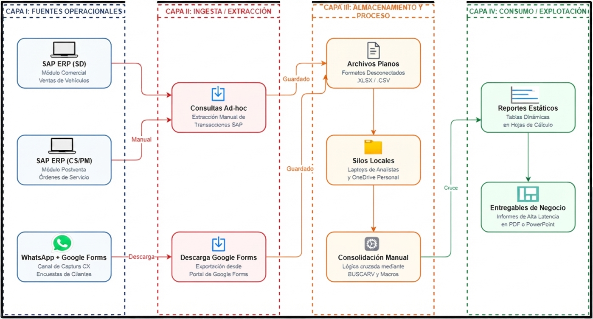
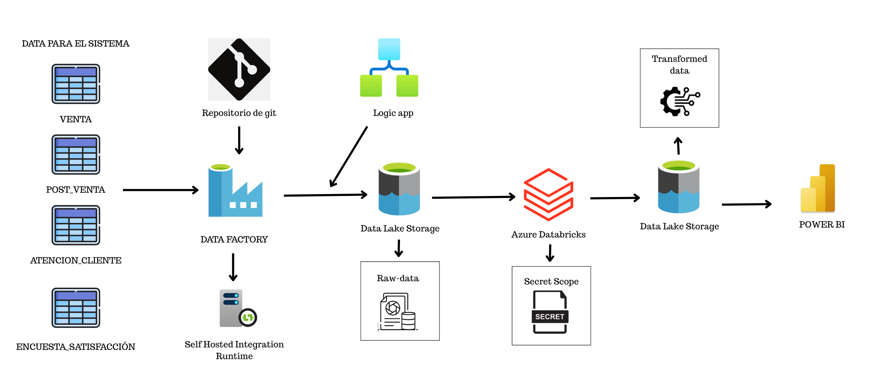
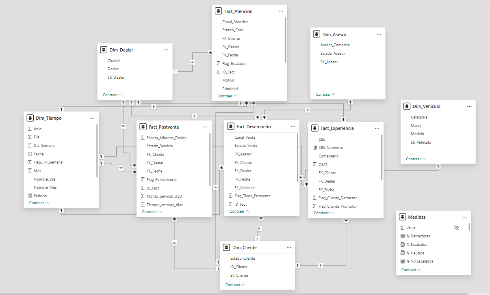

Data Lakehouse para analítica comercial y experiencia del cliente
Caso académico del sector automotriz: una empresa concentra sus datos de ventas, postventa, atención al cliente y satisfacción en fuentes desconectadas y procesos manuales. El proyecto diseña e implementa una arquitectura Data Lakehouse que integra todo en un modelo dimensional único y dashboards en Power BI.
El problema del caso: información desconectada
En el escenario académico basado en Gildemeister, la empresa genera información de ventas, servicios postventa, atención al cliente y encuestas de satisfacción, pero cada área la gestiona por separado con hojas de cálculo, archivos planos y consolidaciones manuales. El resultado: reportes que tardan en llegar, cifras que no cuadran entre áreas, y decisiones comerciales tomadas con información parcial en lugar de una vista integral del negocio.
El objetivo del proyecto fue optimizar la toma de decisiones comerciales y la gestión de la experiencia del cliente mediante una solución analítica que integrara y unificara los datos transaccionales, de postventa y de experiencia del cliente bajo principios de gobernanza y calidad de datos.
La solución: arquitectura de integración y transformación
Arquitectura AS IS
La arquitectura AS IS dependía de consultas ad-hoc a SAP, descargas manuales de Google Forms y consolidaciones en Excel cruzadas con macros. La arquitectura TO BE que diseñamos automatiza todo el flujo, de extremo a extremo:

Arquitectura TO BE
Extracción con Azure Data Factory sobre Self-Hosted Integration Runtime, transformación en Azure Databricks con Apache Spark SQL (limpieza, claves sustitutas, dimensiones y hechos), y carga en formato Delta directamente consultable desde Power BI.

Del problema al consumo analítico
- Comprender el escenario: identificar la fragmentación entre ventas, postventa, atención y satisfacción, y definir los indicadores que se necesitan consultar.
- Diseñar la integración: representar el proceso AS IS y la arquitectura TO BE con Azure Data Factory, Self-Hosted Integration Runtime y Databricks.
- Preparar y modelar: trabajar con los CSV sintéticos, transformar con Spark SQL y estructurar dimensiones y hechos en formato Delta.
- Comunicar: organizar cuatro tableros en Power BI para las distintas audiencias del caso.
Adquisición: 14,000 registros, 4 orígenes
Datos sintéticos en CSV, generados bajo reglas de validación, con cero duplicados y cero nulos reportados al llegar a la etapa de limpieza. Este resultado corresponde a los datos sintéticos del ejercicio, no a una auditoría de sistemas reales.
| Dataset | N.º de registros | Contenido |
|---|---|---|
| Venta_Vehiculos.csv | 2,500 | Ventas, dealer, asesor, vehículo, montos y márgenes |
| Servicio_Postventa.csv | 3,500 | Mantenimientos, tiempos de espera/entrega, reincidencia |
| Atención_Cliente.csv | 3,000 | Casos de soporte, canal, prioridad, tiempos de gestión |
| Encuestas_Satisfacción.csv | 5,000 | NPS, CSAT, CES, calificación general |
En pantallas pequeñas, desplaza la tabla horizontalmente para ver todas las columnas.
5 dimensiones, 4 hechos analíticos (DDV)

Sobre la capa transformada (UDV) construimos un modelo dimensional conformado por las dimensiones Cliente, Dealer, Asesor, Vehículo y Tiempo, y cuatro tablas de hechos orientadas a distintos KPIs de negocio:
Desempeño comercial
Montos, descuentos, márgenes y tiempos de cierre, con monto promedio por dealer y tasa de conversión a postventa.
Experiencia postventa
Tiempos de espera y entrega, reincidencia de fallas y tiempo promedio de espera por dealer.
Atención al cliente
Tiempos de respuesta y cierre por dealer, tasa de escalamiento de casos y calidad de servicio.
Experiencia integral
NPS, CSAT, CES y calificación general, con flag de clientes promotores y NPS promedio por dealer.
Cuatro tableros, cuatro audiencias
Resumen Ejecutivo
Vista consolidada nacional: ventas totales, NPS global, % reincidencia y % escalados en una sola pantalla.
Ventas
Ventas por dealer, modelo, canal y asesor, con márgenes y tiempos de cierre para detectar oportunidades.
Postventa
Tiempos de entrega y cierre por dealer, reincidencia de fallas y tipo de servicio más frecuente.
Experiencia del Cliente
NPS y CSAT por periodo y dealer, segmentación de clientes promotores/detractores y comentarios.
La configuración de actualización diaria, seguridad por rol y reportes automáticos queda pendiente de documentar y verificar. El informe público permite explorar las visualizaciones del caso.
Indicadores comerciales y experiencia del cliente
Explora el dashboard interactivo desarrollado en Power BI. Utiliza los filtros y visualizaciones para analizar los principales indicadores y obtener insights del negocio.
Entregables y alcance del resultado
El caso reúne 14,000 registros sintéticos de 4 fuentes en un modelo dimensional de 5 dimensiones y 4 tablas de hechos, con una arquitectura basada en Azure Data Factory y Databricks y cuatro dashboards en Power BI. Estos entregables muestran la integración de información comercial y de experiencia del cliente en una solución analítica común.
La reducción del tiempo de generación de reportes y la eliminación de inconsistencias del proceso manual son beneficios esperados de la solución. Queda pendiente aportar mediciones comparativas y evidencias de ejecución para demostrar su impacto; no se presentan como mejoras verificadas en una operación real.
Competencias que refleja el proyecto
Diseño de soluciones
Conectar fuentes, capas de transformación y necesidades de consulta en una arquitectura común. El modelo dimensional organiza los datos según preguntas de negocio.
Trabajo técnico en equipo
Distinguir mi aporte en arquitectura y modelado del entregable colectivo, y explicar el recorrido del dato desde su origen hasta la visualización.
Trabajo en equipo
Proyecto desarrollado en equipo para el curso Big Data y Analítica de Datos, USIL, bajo la guía del profesor Ing. Hernán Otiniano Perea Fasanando.